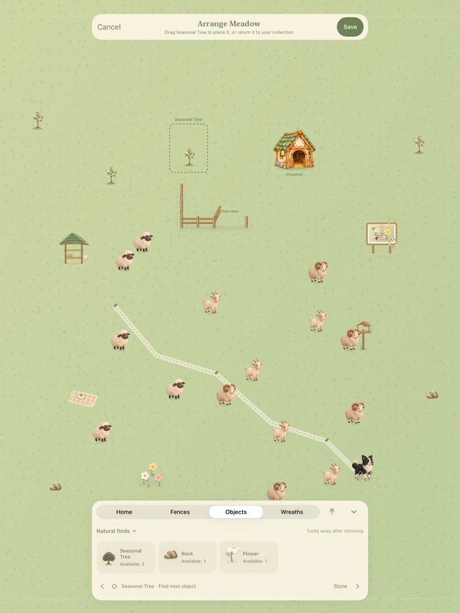

Bring the strays together
Guide your collie into the flock and gather three sheep of the same breed. Look after lambs and earn the trust of wild sheep.
SHEEP DOG: A COZY MEADOW · IOS
Guide a collie. Get the sheep home. Then turn a little patch of grass into somewhere that feels like yours.
Three of a kind gather, leave a flower, and head home.Earlier simulator recording · cropped · 11-second loop
A MEADOW YOU DO MORE THAN WATCH
Not just waiting for a number to grow. You lead the way, look after the flock, and decide where the little things belong.
Guide your collie into the flock and gather three sheep of the same breed. Look after lambs and earn the trust of wild sheep.
The flock leaves a flower, then heads home. An empty patch of grass has a little more life in it because you were there.
Move the sheepfold, arrange fences, and find a spot for flowers, trees and decorations. Your collie is a tiny moving company, too.

A LITTLE CHANGE OF PLANS
A sheepfold nearer the tree. A fence a little further out. Put something down, take a walk, change your mind. Make room for the things you like.
A little extra personality: craft custom sheep breeds with Wool earned by playing. An optional extra, not the main loop, and no paid coins required.
WHEN YOU WANT A CHANGE OF SCENERY
Orchard and creek walks are free to explore. Bring back objects and travel memories, then come home to familiar grass. Sunshine, mist, rain and snow give it a different mood.

A relaxed game about guiding a collie, caring for sheep and arranging a meadow. It is made for iPhone and iPad players who enjoy dogs, animals and gentle pastoral play. Cozy describes the atmosphere, not a health benefit.
Everyday play and local saves work offline, with no game account required. Downloading, purchases, restoring purchases and iCloud save syncing need a connection and the relevant Apple services.
The basic meadow, commissions, and orchard and creek walks are free to play. Helpers Pack, Garden Cottage and Valley Adventure are optional one-time permanent purchases. There are no subscriptions or paid coins. Check your local App Store and purchase confirmation for current prices.
iPhone with iOS 17 or later and iPad with iPadOS 17 or later. The current store description lists nine languages: Simplified Chinese, Traditional Chinese, English, Japanese, Korean, Spanish, German, French and Brazilian Portuguese.
Independent developer Peichen Zhou (周培臣 / CiiN). The full English title is Sheep Dog: A Cozy Meadow; its Chinese name is 狗赶羊. App Store ID: 6809808103.
Come for a walk. See what you would make of this little place.
Start free on the App Store ↗